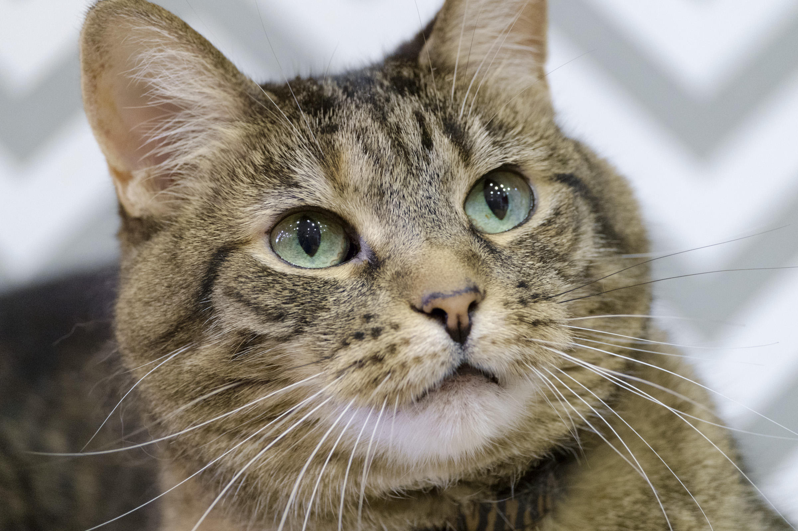

Cats

You know that cats have been domesticated for around 4,000 years?
- Scientific name: Felis catus
- Lifespan: 12 – 18 years (Domesticated)
- Gestation period: 64 – 67 days
- Length: 46 cm (Without Tail)
- Height: 23 – 25 cm
- Mass: 3.6 – 4.5 kg (Adult)
The domestic cat is a small, typically furry, carnivorous mammal. They are often called house cats when kept as indoor pets or simply cats when there is no need to distinguish them from other felids and felines. Wikipedia